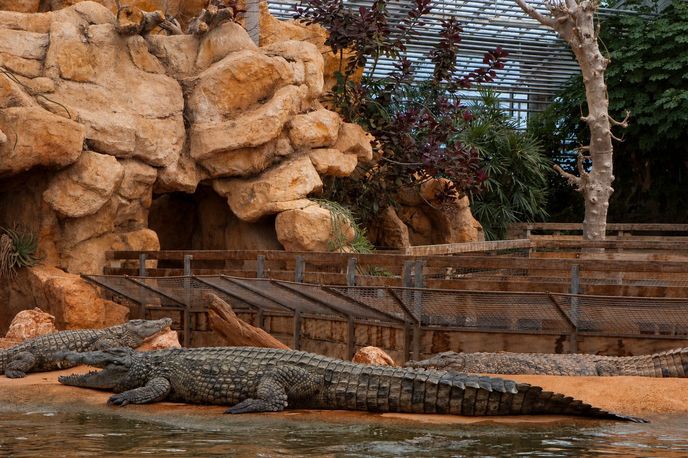

In het zuiden van de Drôme, op ongeveer 1 uur van Les Cabritas, ligt in Pierrelatte het grootste dierenpark van Europa gewijd aan reptielen: de Ferme aux Crocodiles, een spectaculair en exotisch tropisch reservaat.

Een dierenpark als geen ander
In het reservaat leven meer dan 1.200 dieren, waaronder zo'n 200 krokodillen en 350 vrij rondvliegende vogels. Bezoekers zien er nijlkrokodillen, gavialen, Moreletkrokodillen, brilkaaimannen en komodovaranen, maar ook reuzenschildpadden van de Seychellen, de Galápagos en Borneo, en niet te vergeten tropische vissen zoals piranha's.
Een tropische kas van 8.000 m²
Het bezoek vindt plaats in een enorme overdekte kas van 8.000 m², aangevuld met een botanische en speelruimte van 4.000 m² in de buitenlucht. Voederingen met uitleg, ontdekkingsmomenten en educatieve activiteiten vullen de dag voor bezoekers van alle leeftijden. Reken op 2 tot 3 uur voor het bezoek, afhankelijk van uw tempo.
Goed om te weten voor uw bezoek
Online reserveren is in het hoogseizoen aanbevolen om wachtrijen te vermijden. Het is een ideaal uitje op een regenachtige dag, omdat het grootste deel van het parcours overdekt is. Reken op een halve dag, en stop op de terugweg eventueel in Montélimar om het uitje te verlengen.
Praktische informatie vanuit Les Cabritas
- Afstand vanaf Flaviac: ongeveer 1 uur rijden
- Beste periode: het hele jaar, ideaal op regenachtige dagen
- Ideaal voor: gezinnen, dieren, regenachtige dagen
Zin om Pierrelatte en de Ferme aux Crocodiles te ontdekken vanuit uw vakantiehuis in de Ardèche?
Les Cabritas verwelkomt u in Flaviac, in het hart van de Ardèche, voor een comfortabel verblijf met privézwembad, vlak bij de mooiste plekken van de streek.
Beschikbaarheid bekijken